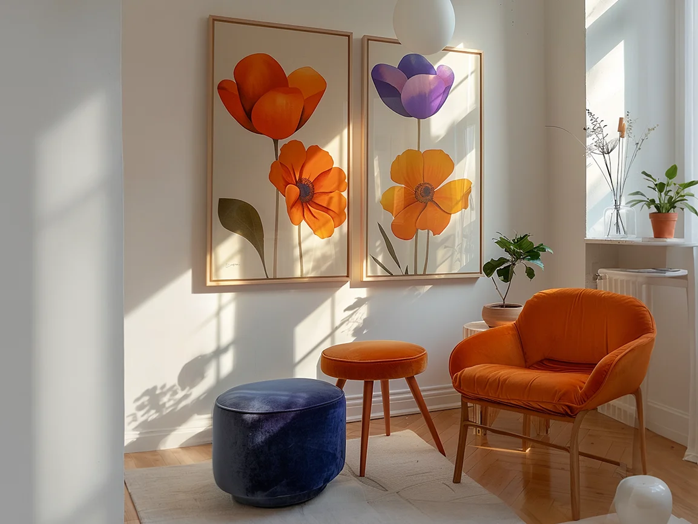

Why Professional Tools Matter for Picture Hanging
When you're hanging one small frame, you can sometimes get away with a tape measure and a rough eye. But as soon as you're:
- Creating a gallery wall
- Aligning multiple frames along a staircase
- Installing valuable artwork or mirrors
- Working in a commercial space (offices, restaurants, hotels, galleries)
…tiny errors become very obvious.
Professional picture hanging isn't just about getting something "up on the wall". It's about:
- Perfect alignment – horizontally, vertically, and relative to other pieces
- Consistent spacing – between frames, edges, and furniture
- Structural safety – using the right fixings for the wall type and weight
- Repeatability – being able to recreate the same level and spacing across an entire property
That's where precision equipment – especially laser levels – comes in.

Laser Levels: The Heart of Professional Alignment
If there's one tool that separates a casual DIY approach from a professional picture hanging service, it's the laser level.
What a Laser Level Does
A laser level projects a perfectly straight beam across a wall (or room), allowing the installer to:
- Set a consistent height for a row of frames
- Align multiple pictures on different walls to the same visual line
- Check that each frame is perfectly level without constantly adjusting and re-measuring
- Work quickly but with a very high degree of accuracy
Instead of nudging a spirit level and hoping you're still in the right position, a laser gives you a reference line you can trust from one end of the room to the other.
Types of Laser Levels Used in Picture Hanging
Professionals typically use:
- Cross-line laser levels – project horizontal and vertical lines; ideal for lining up frames, mirrors and shelves.
- 360° laser levels – project a line all around the room; perfect for large projects, commercial spaces and full-gallery installations.
Mounted on a tripod or fixed to the wall, the laser line becomes a "visual baseline" that every frame can reference. This is how a professional team like Perfectly Hung can create perfectly straight gallery walls, even in tricky London period properties where floors and ceilings are not always level.
Measuring Tools: Tapes, Rules and Laser Distance Meters
Laser levels handle alignment, but measuring is its own discipline.
Steel Tape Measure
A professional won't go anywhere without a reliable tape measure. It's used to:
- Mark the centre of furniture, sofas and beds to align art above
- Set consistent gaps between frames (for example, 50mm or 75mm apart)
- Ensure symmetry around doors, windows, fireplaces and TV units
Rigid Rules and Straight Edges
These are handy for:
- Short measurements where maximum accuracy is needed
- Drawing light pencil lines where appropriate
- Checking the face of the frame or mirror itself for straightness
Laser Distance Meters
On larger projects, a laser distance meter speeds up work dramatically. It allows the installer to:
- Measure long spans of wall with one click
- Check exact distances between two points without moving furniture
- Quickly calculate equal divisions for groups of frames or panels
This kind of precision and efficiency is difficult to match with a basic toolkit.
Stud Finders, Cable Detectors and Wall Scanners
It's not just about where your picture looks best – it's also about where it's safe to drill.
In London homes and commercial buildings, walls can hide:
- Studs and battens
- Electrical cables
- Pipes and ducting
- Dot-and-dab plasterboard over brick or block
Stud Finders
These tools help locate timber or metal studs behind plasterboard, giving a secure fixing point for heavier items like:
- Large mirrors
- Oversized artwork
- TV brackets and AV installations
Cable and Pipe Detectors
The last thing you want is to drill into a live cable or pipe. Professional installers use detectors to reduce this risk by:
- Scanning the area before drilling
- Identifying zones where cables or pipes are likely to run
- Choosing safer areas for fixings
This is a key difference between DIY and professional picture hanging: safety checks aren't a guess – they're part of a process.
Drills, Bits and Fixings: Matching Hardware to Wall Type
Even perfect measurements are useless if the fixings aren't secure. Different walls demand different approaches.
Understanding Wall Types
Common wall types include:
- Solid brick or block – found in many older London properties
- Plasterboard on timber or metal studs – common in modern builds and renovations
- Dot-and-dab (plasterboard over masonry) – a hybrid that needs special handling
A professional picture hanging service like Perfectly Hung will identify the wall type before choosing fixings.
Drilling Equipment
Professionals use:
- Hammer drills or combi drills – for masonry walls
- Carefully selected drill bits – masonry, wood or metal depending on substrate
- Depth stops or tape markers – to avoid drilling too deep
The Right Fixings
Choosing the correct fixing is crucial for safety and longevity. Options include:
- Standard wall plugs for brick or block
- Heavy-duty plasterboard anchors for hollow walls
- Spring toggles or cavity fixings for heavier loads
- Specific fixings for very heavy mirrors, TVs and sculptures
This is where professional experience really matters. It's not just about using "strong" fixings – it's about using the right fixing for that particular wall and weight.
Hanging Hardware: Hooks, Wires and Rail Systems
The visible side of the installation matters just as much.
Picture Hooks and Hangers
Professionals select hangers based on:
- The frame weight
- The hanging method (D-rings, wire, keyhole plates, sawtooth)
- The desired position and micro-adjustability
Double hooks are often used for larger frames to keep them stable and reduce tilting over time.
Picture Wire and D-Rings
High-quality picture wire and D-rings allow fine adjustments so that:
- Frames sit flat to the wall
- Small tweaks can be made without re-drilling
- Multiple frames align visually, even if their rear fittings are different
Rail and Gallery Systems
In galleries, commercial spaces and some high-end homes, picture rail systems are used. These allow:
- Flexible repositioning of artwork without making new holes
- Easy rotation of exhibits
- Clean, minimal hardware that keeps the focus on the art
A professional art installation service will recommend these systems where they make sense, especially for businesses and collectors.
Marking, Cleaning and Protection
The "small" tools are often what make a professional job feel polished.
- Pencil and fine markers – for discreet, removable marking points
- Gap gauges and spacers – to keep distances between frames perfectly consistent
- Microfibre cloths and gloves – to protect frames, glass and walls from fingerprints and smudges
- Dust sheets and protective coverings – keeping carpets, furniture and artwork clean during drilling
These details don't always show in photos, but they massively affect the overall experience for the client.
Safety Gear: Looking After People and Property
Professional installers take safety seriously, especially when working at height or handling heavy items.
Typical safety gear includes:
- Stepladders and platforms that meet safety standards
- Safety glasses when drilling or chiselling
- Gloves for handling heavy or sharp frames
- Proper lifting techniques and sometimes two-person teams for large mirrors and TVs
In a busy London home, gallery or office, this level of care matters. It reduces risk for everyone on site.
DIY vs Professional Picture Hanging in London
With a good eye and a bit of patience, you can hang a few frames yourself. But there are times when calling in a professional picture hanging service is simply the smarter choice:
- You've invested in high-value artwork or mirrors
- You want a feature gallery wall in a key room
- Your property has tricky walls (old plaster, unknown services, tall ceilings)
- You're fitting out a commercial space, hotel, restaurant or gallery
- You need multiple rooms or an entire property done to a consistent, high standard
A team like Perfectly Hung combines all the tools we've talked about – laser levels, stud finders, professional fixings and more – with years of experience working across London homes and businesses. The result is a finish that feels effortless, even though a lot of careful planning and equipment sits behind it.
Final Thoughts: The Difference Precision Makes
Professional tools don't exist to complicate picture hanging; they exist to make it predictable, safe and beautiful.
- Laser levels ensure straight lines.
- Stud finders and scanners keep drilling safe.
- The right fixings keep your artwork secure.
- And a methodical process turns a bare wall into a carefully curated space.
If you're in London and you'd rather skip the trial-and-error (and the extra holes in the wall), Perfectly Hung can handle the picture hanging, art installation, mirrors, shelves, curtains and blinds for you – using the same precision tools and techniques described in this guide.
Your walls – and your artwork – deserve to look as good as they possibly can.